GNUstep development tools : a basic tutorial
This tutorial will introduce you to creating a GNUstep application using
ProjectCenter.app and Gorm.app. Please note that everything may not exactly
work as shown because those two applications are still under development.
However, the concepts taught here should not change.
Creating an App
Launch ProjectCenter.app and select Project->New. In the "Create new
project..." dialog, select Application.
Select the location of your application , give it a name (here we chose
"Converter") and press OK.
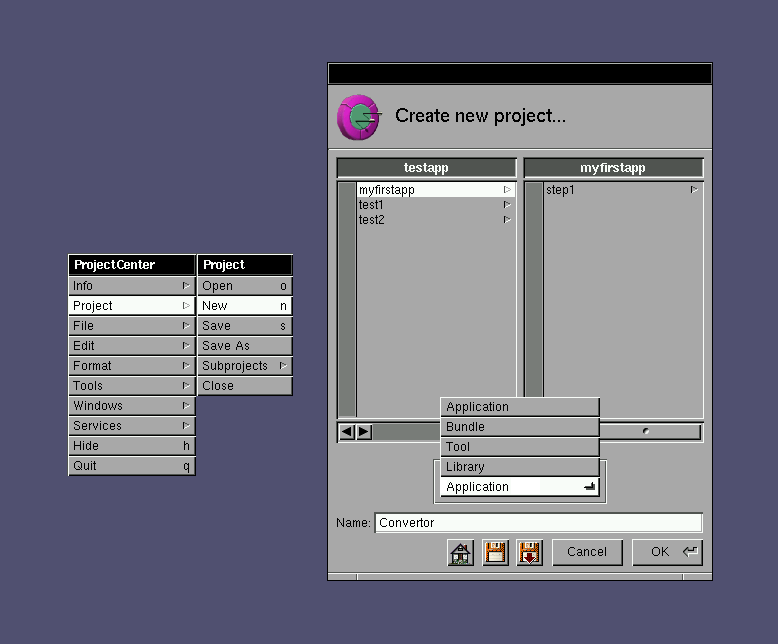
Editing the interface file
Select Interfaces in the main window browser, then select Convertor.gorm
(or name_of_your_app.gorm) and double-click on it. That should launch
Gorm.app and have it open the file.
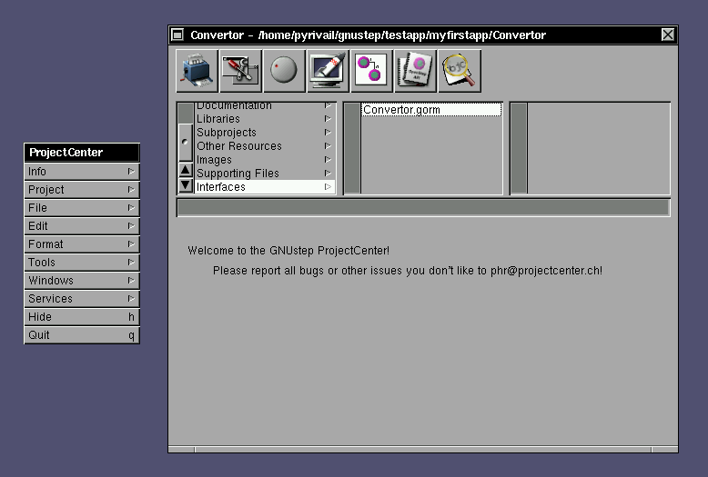
Gorm.app first contact
Here is what you'll get once you've double-clicked the .gorm file.
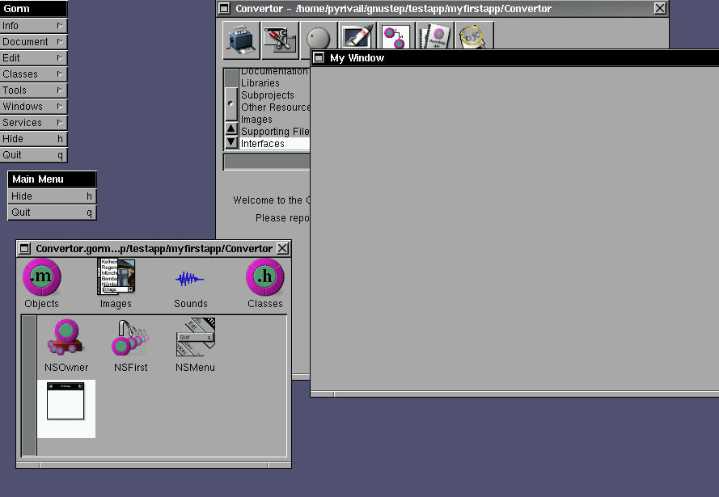
Displaying the Inspector and Palettes windows
Select Tools->Inspector... and Tools->Palettes...
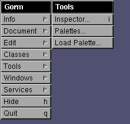
Then you'll see the Palettes and Insepector windows. Rename the title
of "My Window" to, for example, "Converter".
The Palettes Window contains many palettes. Each of the palettes contains
components which can be drag-and-dropped to the interface window.
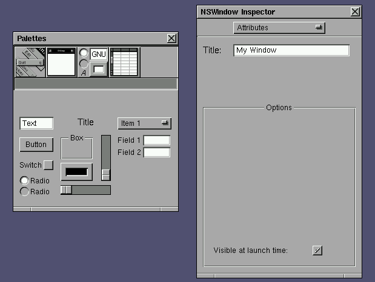
Creating the interface
Try to drag-and-drop some Text, Title and Button components to the Converter
window. Move things in order to obtain an interface that looks close to the
following one.
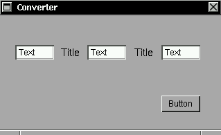
Using the Inspector you can change propreties of the components. Select
a component. Select the Attributes panel of the Inspector, if not already
selected. Scroll down to "setStringValue:" and click on it. You can then
change the value. Don't forget to press "Enter" or to click OK once you've
finished editing the value.
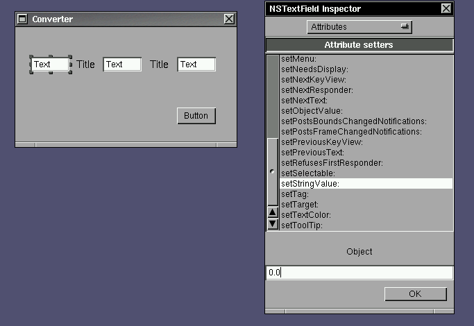
Change the string values of the components to obtain the following.
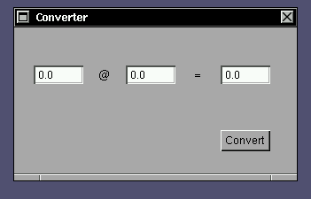
Creating a subclass
Now select the "Classes" part of the main window. Select the NSObject
class and do Classes->Create Subclass..., in order to create a subclass
of NSObject.
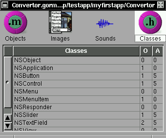
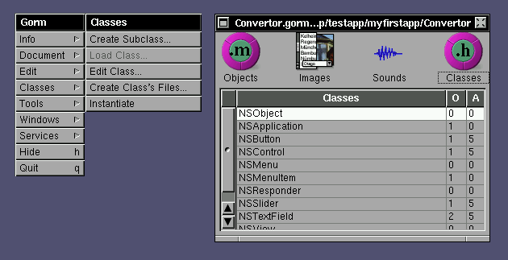
You should then see the following inspector window. If not select the
new class (which should still be called NewClass) in the class browser of
the main window, and do Classes->Edit Class...
Rename the class from NewClass to ConvertorManager (don't forget to press
Enter, or your change will not affect anything).
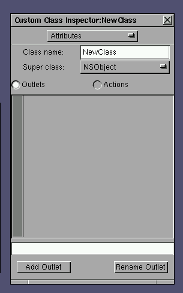
Adding outlets & actions
Now let's add some outlets. Outlets are basicly instance variables of
the class, that you will connect to inteface's components at design time.
So add three outlets : "amount", "rate", "result" :
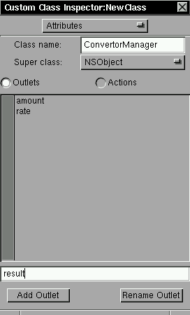
You will now create an action. An action is an object method which can
be linked to interface's component at design time, so that a specific action
on the component will get this method to be called.
Add one action named "convert:", please notice the ":" at the end.
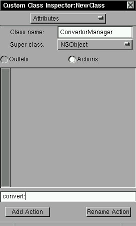
Instantiating the class
Now that we have defined the class's outlets and actions, we need to instantiate
it. Do select Classes->Instantiate. Doing this tells GNUstep to create
an instance of this class when the application is launched (to be more precise,
when the nib/gorm file is loaded.) You should now see a new object (ConvertorManager)
in the Objects part of Gorm's main panel.
Connecting outlets and actions
We now need to connect the outlets of the instance of ConvertManager we
have created to their corresponding components. As you may have guessed,
the amount outlet is to be connected to the first text field, rate to the
second and result to the third.
Hence the ConvertManager instance will be able to access those fields by
using its instance variables. You will not have any code to write to have
those connections up and working.
To connect the amount outlet to the first text field, you have to drag-and-drop
while pressing the Control key from the ConvertorManager instance (the instance
is in the Classes part of Gorm's main panel) to the first text field. Little
S and T icons will appear showing who is the Source and who is the Target
(those icons always appear in the bottom-left corner, if they are not then
you are probably not selecting the component you want to select).
After drag-and-dropping, you have to select which outlet of the Source you
want to connect to the target, do this by clicking the correct outlet in the
Outlets column of the Inspector and by pressing the connect button. Do this
for all three outlets (at this time, selecting the source and target is a
bit tricky, before connecting two objects, do unselect all objects in the
"Converter" window, you can do this by clicking in the background of the
window).
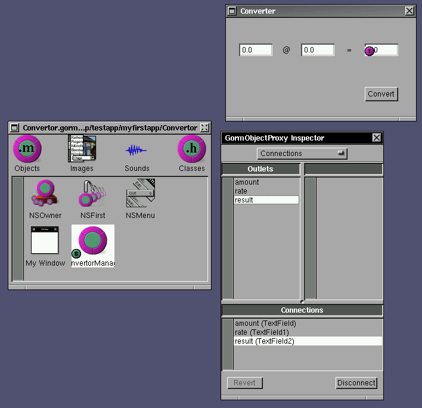
Connecting an action is a similar operation. Do a drag-and-drop with
the control key pressed, from the Convert button to the instance of ConvertorManager.
Then click target in the Outlets part of the inspector, all available actions
of the target (here the ConvertorManager instance which has only one action)
will appear in the Actions column. Click on the convert: action, and press
the connect button. Now, everytime the convert button is pressed it will call
the convert: method of the instance of ConvertorManager.
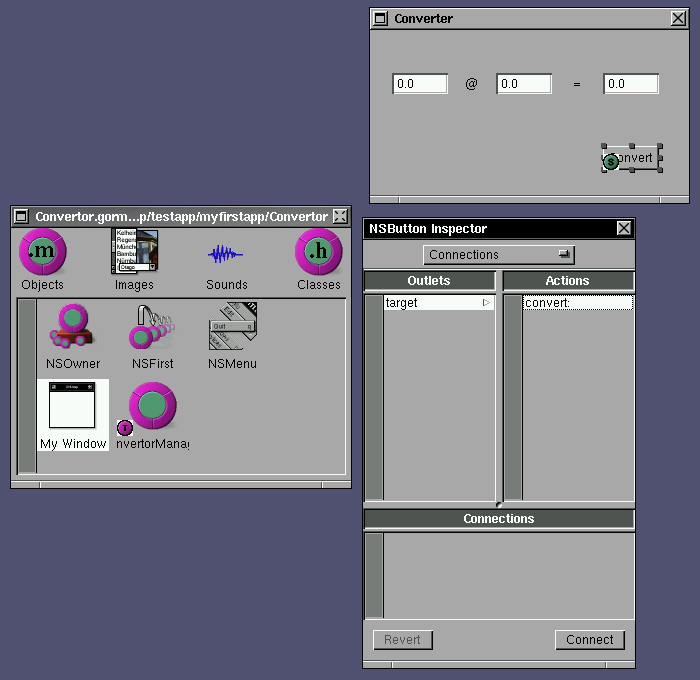
Creating the class's source and header files
Gorm.app can automatically create the skeleton of the class you've designed
: select the ConvertorManager class in the Classes panel of the main window,
and do Classes->Create Class's Files.
Two succesive Save Panels will pop up for the .m and the .h files. Choose
filenames like ConvertorManager.m and ConvertorManager.h. Save those files
into the Project directory.
Once this is done, you can save the interface, close Gorm.app and go back
to ProjectCenter.app.
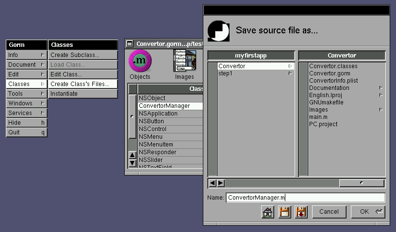
Adding the class's source and header files to the current project
You now need to add the class's files to the project. Double-click "Classes"
in the first column of the browser, choose the .m file to add to the project
(ConvertorManager.m), ProjectCenter.app will ask you if you also want to
add the .h file, say yes.
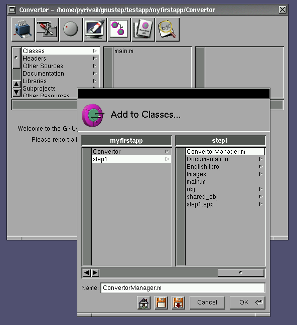
Writing the convert: method
Open the ConvertorManager.m file by double-clicking it's name within ProjectCenter.app
browser.
You should see the following :
/* All Rights reserved */
#import <AppKit/AppKit.h>
#import "ConvertorManager.h"
@implementation ConvertorManager
- (void) convert: (id) sender
{
/* insert your code here */
}
@end
Add the following inside the convert: method:
[result setFloatValue: [rate floatValue] * [amount floatValue]];
or if you want to have a nicer dispaying :
[result setStringValue: [NSString stringWithFormat: @"%1.2f",
[amount floatValue] * [rate floatValue]]];
Save the file.
Compiling and running
Click 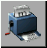
to dispay the building panel. Then click 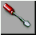
to build the project. If there is no errors (and hopefully there is none),
you can run the application. To do it, click
to display the run panel. Then click the first button (at this time it
has still no icon), this should launch the application :
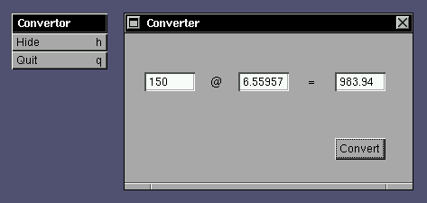
Convertor.app in action, converting between French Franc and Euro.
Congratulations, you have made your first GNUstep application.
Initial writing 07-07-2001
Modified 02-Feb-2005 by Alex Perez
Copyright © 2001, 2005 Pierre-Yves Rivaille